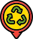

<div class="root">
  <mat-toolbar color="primary" class="toolbar">
    

    <div class="header">
      <span>Bin-there</span>
    </div>

  </mat-toolbar>
  <div class="container-wrapper">
    <router-outlet></router-outlet>
  </div>
</div>
